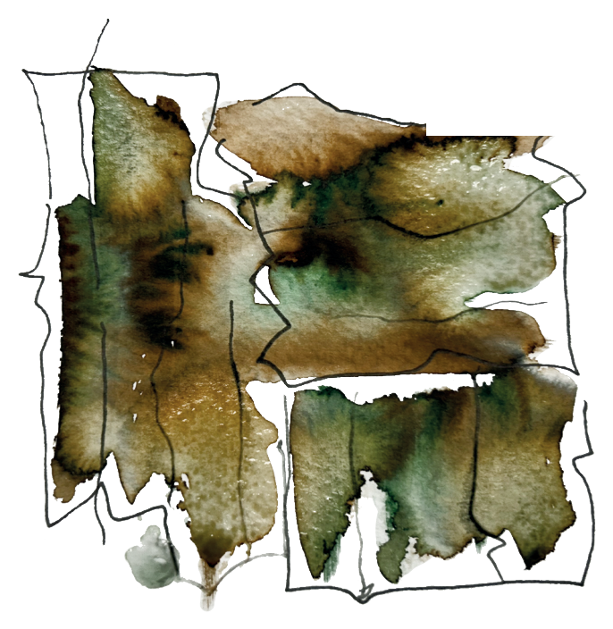
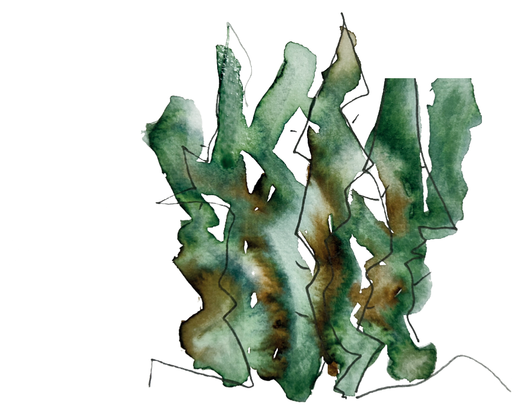
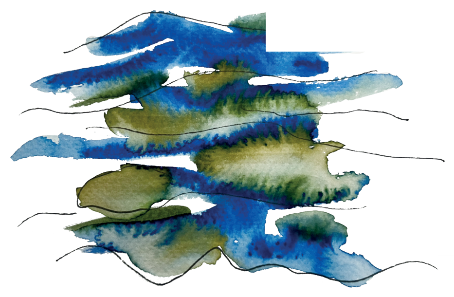
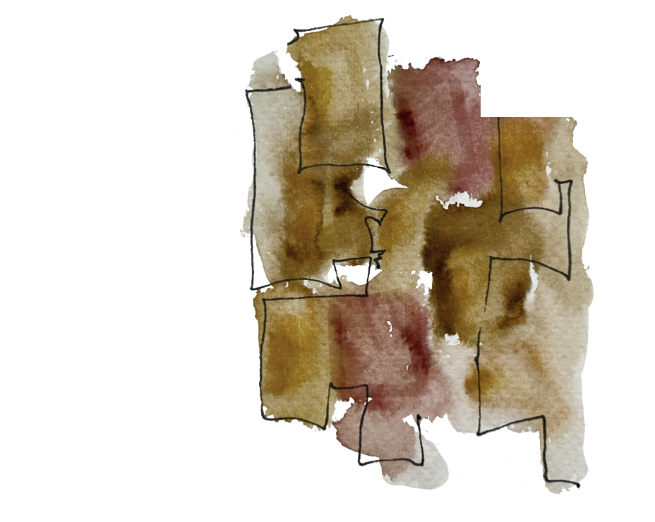
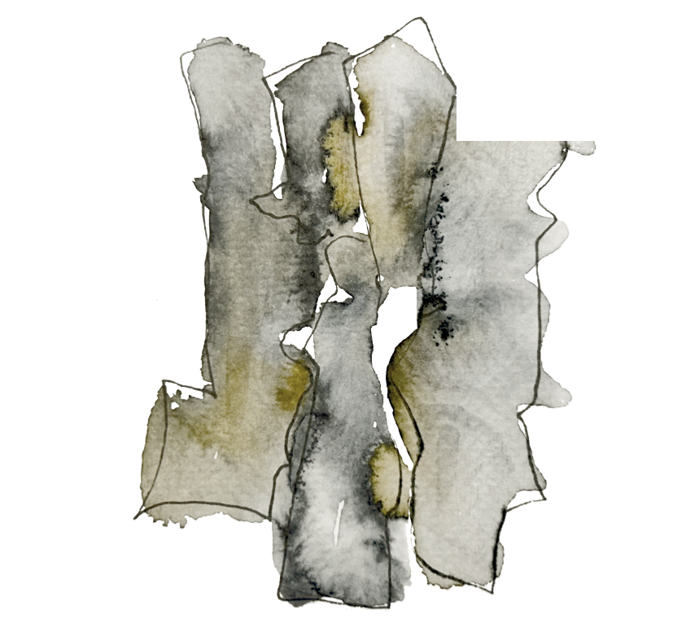
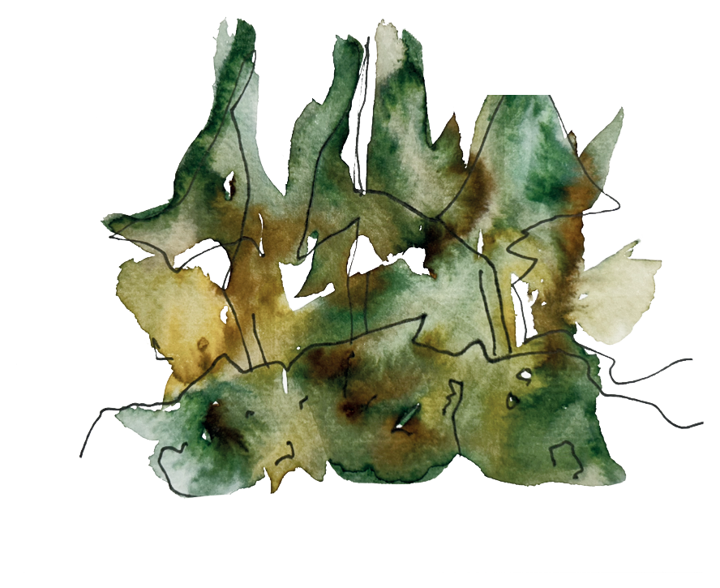
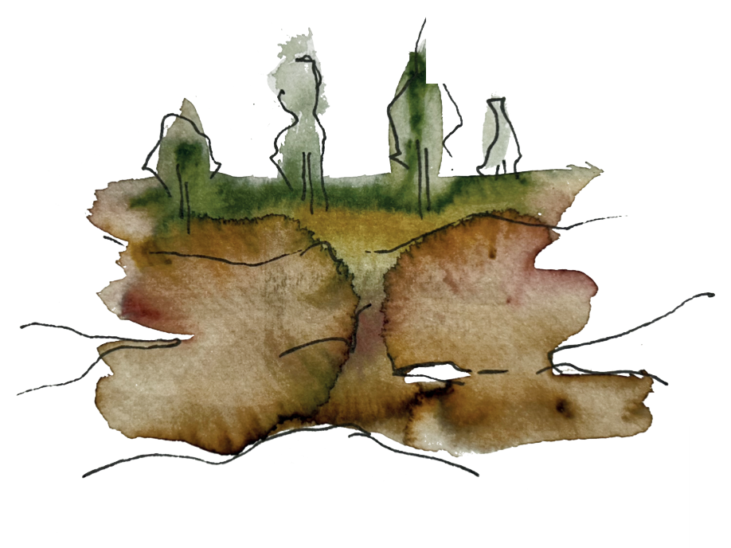
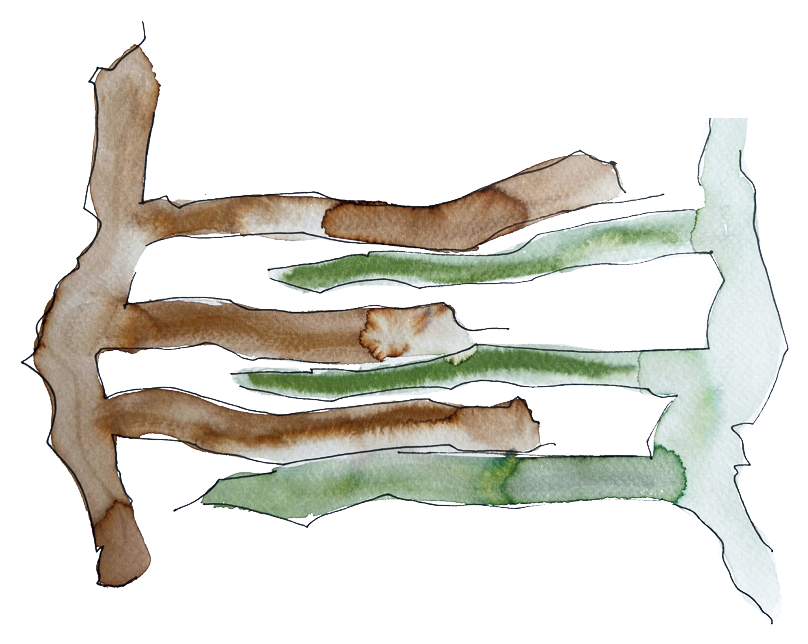

01. Huerta
Calzada de Vergara
39,17114° N, 1,53659° O
Pases de temporada — próximamente.
Cuaderno Dos nace de "Las 1000 recetas de la cocina de Albacete", el libro que Carmina Useros escribió en 1971. A partir de esas recetas rescatadas construimos un menú por parajes: cada lugar de nuestro entorno con su propia historia y sus propios platos.
"Esta edición es para ellos, como representantes de toda la juventud de nuestra tierra, para que amen las costumbres tradicionales de nuestros guisos y costumbres y las extiendan por todos los lugares por donde transcurran sus vidas."

Calzada de Vergara
39,17114° N, 1,53659° O
Pases de temporada — próximamente.

Pinar de Don Vicente
39,3262° N, -1,4507° O

Tamayo
39.371° N, -1.44876° O

Casa de Doña Trànsitos
39°17'45"N 1°39'11"O

Barranco del Molinar
39°13'08.0"N 1°14'15.0"O

Casas del Cerro
39°11'07"N 1°25'46"O

Villa de Ves
39°13'20"N 1°15'32"O

Cilanco
39°20'11"N 1°18'21"O